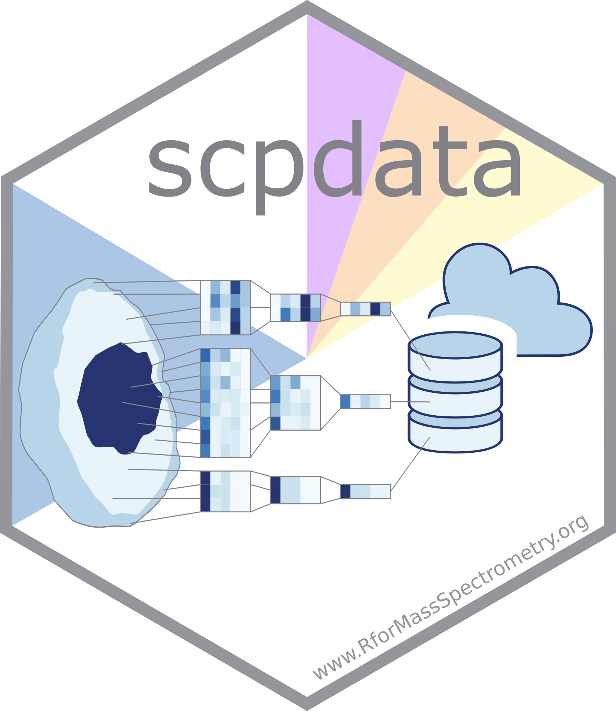

The scpdata package contains standardized and annotated single-cell proteomics data.



Installation instruction
To install the stable version from Bioconductor:
if (!requireNamespace("BiocManager"))
install.packages("BiocManager")
BiocManager::install("scpdata")To install the development version from GitHub:
BiocManager::install("UCLouvain-CBIO/scpdata")Loading a data set
The available datasets can be accessed through ExperimentHub. Use scpdata() to display the table with available datasets.
You can either use the ExperimentHub interface or use the functions provided scpdata to retrieve the data set of interest.
Loading data using the ExperimentHub interface
You first need to set up a connection with ExperimentHub. You can browse and query the database to look up a data set of interest (see ?ExperimentHub for more information).
eh <- ExperimentHub()
query(eh, "scpdata")Suppose you are interested in the specht2019v2 data set, you can retrieve the data using the corresponding ExperimentHub ID. In this case the ID is EH3899.
scp <- eh[["EH3899"]]Loading data using the scpdata functions
scpdata exports a function for each of the data sets. Retrieving the specht2019v2 is performed by simply running the specht2019v2() function.
scp <- specht2019v2()The documentation of each function contains information about its corresponding data set. The information includes a description of the data content, the acquisition protocol, the data collection procedure, and some associated references and data sources.
?specht2019v2Available data
We collected the associated data that usually contains 3 levels of :
- PSM data is the data obtained after running feature identification and quantification from the raw data. PSM stands for peptide to spectrum match. The rows in the data are PSMs and columns are samples.
- Peptide data is the expression data where rows are peptides and columns are samples.
- Protein data is the expression data where rows are proteins and columns are samples.
Please refer to the documentation and original papers for a thorough description of the data processing.
Contributing to scpdata
Suggestions and bug reports are warmly welcome! You can submit them by creating an issue on the the scpdata GitHub repository.
License
The scpdata code is provided under a permissive GPL-3.0. The documentation, including the manual pages and the vignettes, are distributed under a CC BY-SA license.